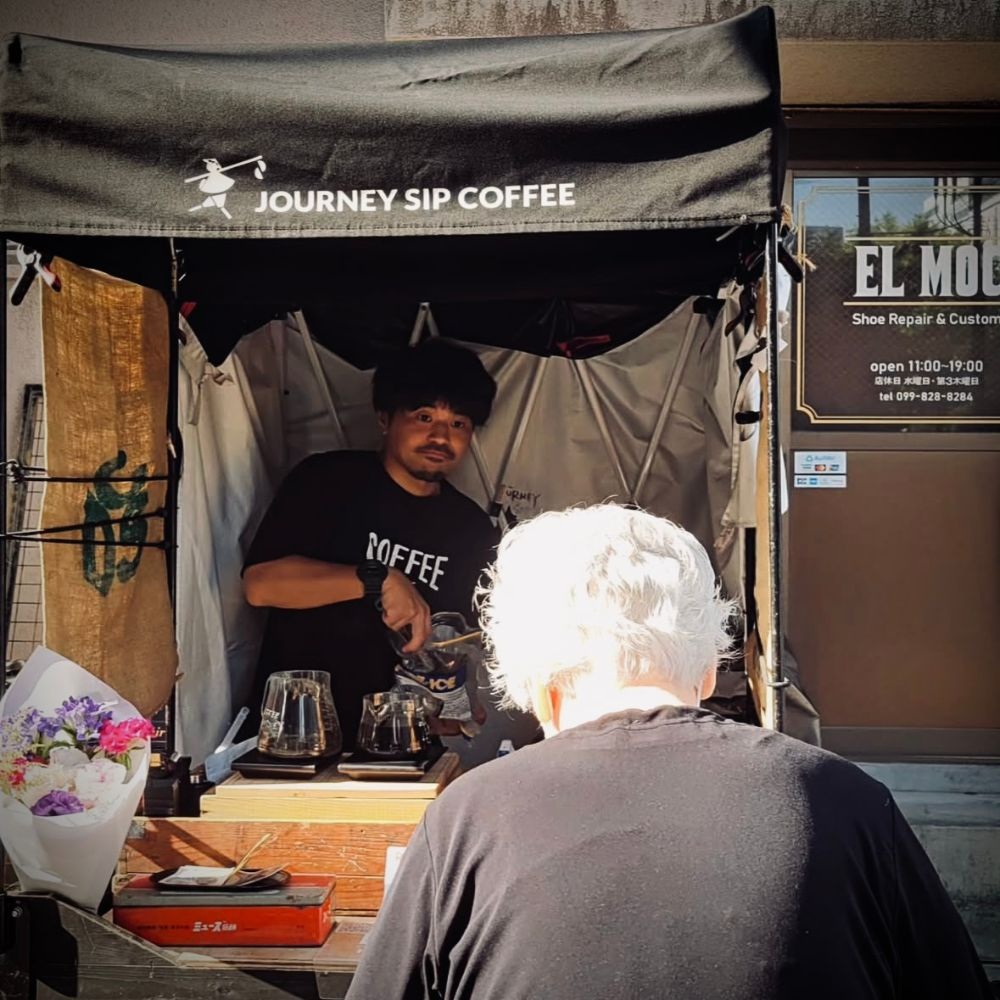

05 — STORY
Story
鹿児島県志布志市出身｜1993年生まれ

学生時代
〜2016
お茶の生産が盛んな志布志市有明町にて、3人兄弟の末っ子長男として生まれ、サッカーに夢中になりながらのびのびと育つ。母子家庭だったこともり、就職をする前提で工業高校に進学するも、3年進級時に東日本大震災で就職先が軒並み減り、就職の幅を広げるために福岡工業大学の工学部へ進学。
会社員時代
2016-2023
大学卒業後、地元鹿児島に戻り新卒でコンクリート製造会社に就職。現場管理職として工程・労務管理や設備管理、組織として成果を出すためのチームづくりを経験する。コロナを機に転職を決意し、2021年に未経験でEC事業会社へ転職。健康食品をメインとした新規店舗の立ち上げと、初期売上をつくるための仕組み化事業に従事。
個人事業主
2023-2024
自分の可能性を試したいという想いで、2023年末に独立。JOURNEY SIP COFFEEを創業。西日本唯一の自転車コーヒー屋台を地元鹿児島で展開。自家焙煎のコーヒーをハンドドリップ専門店として活動をスタート。1年目はビジネスが軌道にのらず、収入を確保するために老舗のコーヒー店で経験を積んだり、Amazonカスタマーサポートの夜間人員として働く。
現在地点
2025-
認知科学コーチングと出会い、行動面が変化。コーヒービジネスだけで月商80万を達成。自分へのさらならる可能性を信じ、コーヒービジネスを続けながら転職支援や個人向けコーチングの価値提供にも挑戦。企画スキルを活かしPOP UPやイベント運営などにも参画。最近は目標を前進されるためのコミュニティ運営を主宰したり、地域の困りごと解決事業として、草むしり事業をしたりAIを活用した取り組みも実行中。さまざまな分野で「やってみたい」を「やってみた」に変えている。